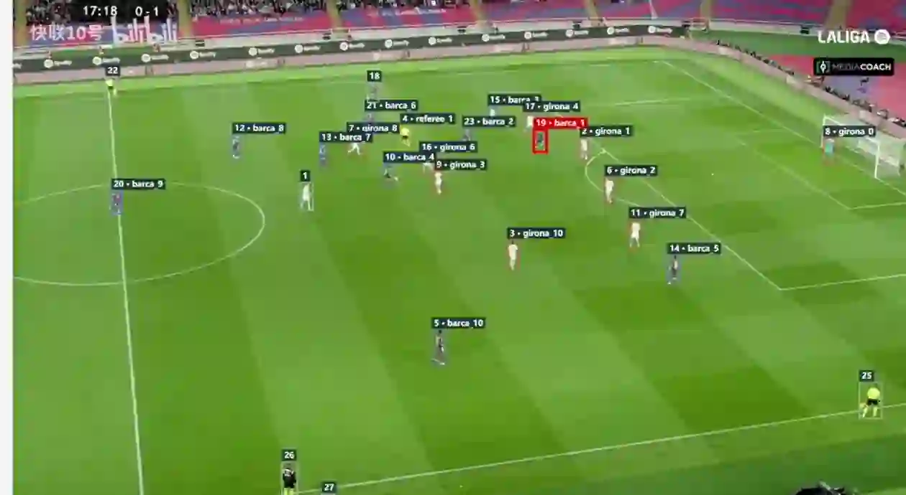

CHANGE THE WAYYOU SEE THE GAME
Powered by video, data and AI—
we bring PRO data analyze technics to every team.
Too Good to Miss
Our AI-powered Focus cameras deliver hands-free, hassle-free capture of every moment, delivering HD film that fuels player development.
Meet the Focus Camera SystemInsights That Fuel Instincts
The most powerful data platform in sports, with AI-fuelled data and insights for teams at every level.
The Next Level of Game PrepThe Pulse
of Performance
The power to optimise every athlete. Our monitors and AI-powered intelligence platform help every player recover faster and compete at their best.
Explore Athlete-Level InsightsFind the Right
Talent Faster
The deepest library in sport, with video, data and history on every athlete and built-in communication tools to help athletes and teams connect.
See the Future of RecruitingHudl Powers Sports
Millions of athletes. Hundreds of thousands of teams.
The industry standard at every level of the game.

Real Impact in Real-Time
How Palmeiras used Hudl Replay to gain an immediate advantage.
Read MoreStaying on Top of Their Game
Hudl’s human performance platform helps Fulham FC handle the rigours of the English Premier League.
Read MoreFlexible Meets Powerful
Football Association of Ireland utilises the power of the portable Hudl Focus cameras to deliver real results.
Read MoreYour Sport. Your Level. Your Hudl.
Every club is different. Let’s find the right solution for yours.
Talk to our team